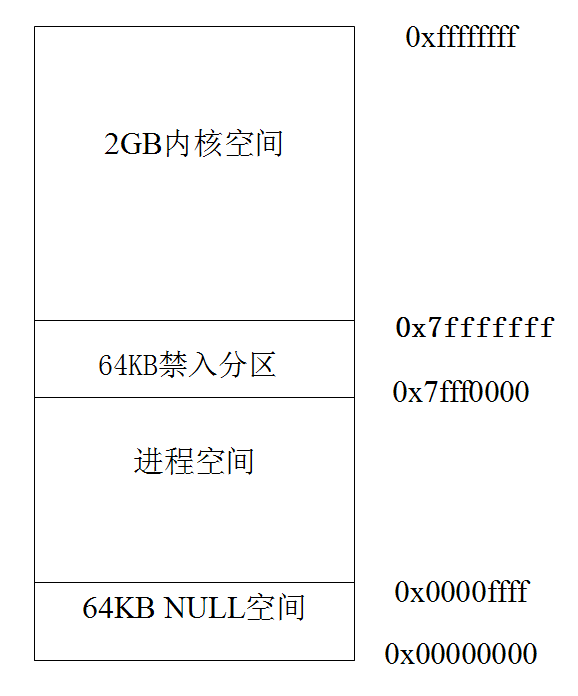
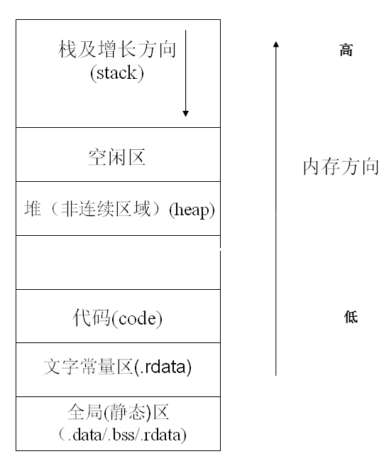
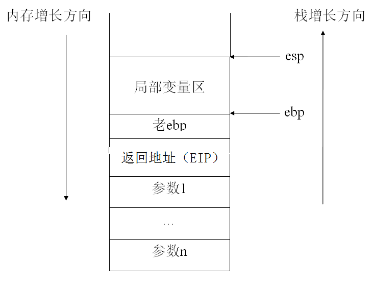
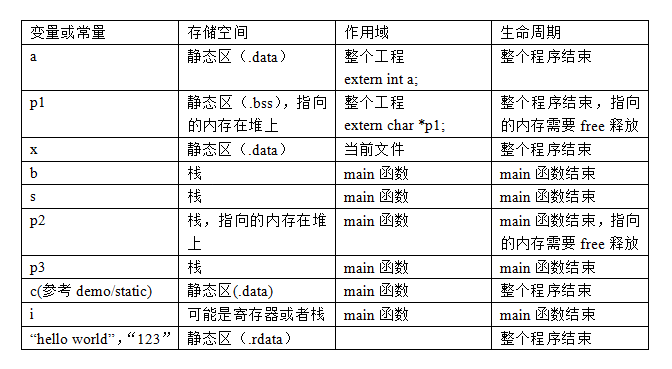

在C/C++程序里，参与计算的数据都是通过存放在内存中不同类型的常量或者变量来表示的。常量，就是不同类型中不变的值。比如’A’, 100, 3.1415926,"hello world"等等。可以通过宏来定义一些常量，比如：
#define PI 3.1415926
上面就用一个常量符号PI来定义了圆周率的值。以后就可以在程序中使用这个PI来计算圆相关的数值。
变量是内存或寄存器中用一个标识符命名的存储单元，可以用来存储一个特定类型的数据，并且数据的值在程序运行过程中可以进行修改。可见，变量首先是一个标识符或者名称，就像一个客房的编号一样，有了这个编号我们在交流中就可方便言表，否则，我们只可意会，那多不方便。为了方便，我们在给变量命名时，最好能符合大多数人的习惯，基本可以望名知义，便于交流和维护；其次，变量是唯一确定的对应内存若干存储单元或者某个寄存器。这些是编译器来保证的，用户一般不用费心。
程序员一旦定义了变量，那么，变量就至少可为我们提供两个信息：一是变量的地址，即操作系统为变量在内存中分配的若干内存的首地址；二是变量的值，也就是，变量在内存中所分配的那些内存单元中所存放的数据。
由于程序的多样需要，我们对变量也有各种各样的要求，比如：变量的生命期，变量的初始状态，变量的有效区域，变量的开辟地和变量的开辟区域的大小等等；为了满足这些要求，C语言的发明者就设置了以下变量：
1、 不同数据类型的变量；如：char cHar, int iTimes, float faverage;
2、 全局变量；
3、 局部变量；
4、 静态变量：静态全局变量和静态局部变量；关键词：static
5、 寄存器变量：关键词：register;
6、 外部变量：关键词：extern;
C语言中，变量在内存中开辟地的大小由数据类型决定的，由于PC机中规定一个地址单元存一个字节， 不同的数据类型的变量，为其分配的地址单元数是不一样的。 C语言中除几种基本的数据类型外用户还可以通过typedef来自己定义所需要的数据类型。 比如：
typedef int INT;
typedef unsigned int UINT;
typedef unsigned short USHORT;
typedef char CHAR;
typedef struct _Node
{
int val;
struct _Node *next;
}Node, *PNode;
其中的INT,UINT,USHORT,CHAR, Node,PNode就是定义的新的数据类型。为什么有了int,char等类型，还要重新定义一个INT和CHAR呢？实际上这样的好处是一旦平台发生了变化，char和int的定义发生了变化，自己的程序库因为使用的是自己的CHAR，INT等类型，可以改动很小，而MS等程序库也正是这么做的。
在函数内部说明的变量为局部变量，只有在函数执行时，局部变量才存在，当函数执行完退出后，局部变量随之消失。 也就是，当函数执行完退出后，原先在函数内定义的变量现在不能用。
与局部变量不同，全局变量在整个程序都是可见的，可在整个程序运行过程中，对于任何一个程序都是可用的。全局变量的说明的位置在所有函数之外，但可被任何一个函数使用，读取或者写入。但是在多个线程里访问全局变量的时候，需要注意多线程安全问题。请参考：多线程安全
静态变量是分配在存储器中C程序所占据的数据段内， C程序运行的整个过程中一直保留，不会被别的变量占用。静态变量可以定义成全局变量或局部变量，当定义为全局变量时，在它定义的程序的整个运行期间均存在并且保持原来的存储单元位置不会改变。
同静态全局变量定义一样，当在局部变量名前加静态变量说明符static,该变量就定义为静态局部变量。编译器为该变量建立永久存储单元。永久是指C程序运行的整个过程中一直保留，不会被别的变量占用。静态局部变量和静态全局变量的根本区别在作用区域上，静态局部变量只在它被说明的函数或复合语句中有效，并且在两次函数调用期间仍然保存其值不变，即就是有记忆功能；它们的生命期是相同的，和C程序整个运行期同在。
1、 局部变量和静态局部变量的区别：普通局部变量函数退出后，值就无效了。而静态局部变量具有记忆功能，能够记住上次执行后的值；
2、 静态局部变量只初始化一次，并且默认初始化为0；
以下面的程序为例：
int func1(int x)
{
int z = 0; // z是一个普通的局部变量，每次函数调用，z都为0
z += x;
return z;
}
int func2(int x)
{
static int z = 0; // z是一个静态局部变量，只进行第一次初始化，
// 以后每次函数调用，都保留上次调用的值
z += x;
return z;
}
int main(void)
{
for(int i = 0; i < 10; i++)
{
//此处10次循环，func1的输出分别为0,1,2,3,4,5,...,9;func2的输出分别为：0,1,3,6,10,...
printf("func1(%d) = %d, func2(%d) = %d\n", i, func1(i), i, func2(i));
}
return 0;
}
寄存器变量不像其他变量那样在内存中存放数据，而是在CPU的寄存器中暂存数据，使用寄存器变量比使用内存变量的操作速度快得多。只有整型和字符型变量可定义为寄存器变量。定义方式如下：
register int i;
由于CPU中寄存器有限，尽量减少使用数量和和占用时间，用完马上释放；不能定义为全局变量，也不能定义在结构或者类中。如果寄存器已经无可用资源，那么寄存器变量将转化为普通局部变量。
在大型程序中，会将一个大型的程序分成若干个独立的模块和文件分别编译，然后统一链接在一起。为了解决全局变量和函数的共用问题，就引入了 extern关键字。这样只需在一个文件中定义全局变量和函数，在另一个文件中要用到这些变量和函数时，只需将那个文件中的变量和函数说明表复制过来，在前面加上extern，告诉编译器，这些变量和函数已经在别的文件中定义说明。
上面已经提到，无论是程序的代码还是数据，都是被加载和保存到内存中，从而被运行和访问的。以下图的X86系统为例。在X86系统中， 内存的有效范围为4GB，其中高2GB为内核空间，用来存放内核的代码和数据；低2GB为用户空间，运行进程的用户态代码，并且低2GB的内存是进程私有空间。一个进程不能跨进程访问别的进程空间的用户态地址。
如下所示，程序在内存中分为如下几部分（section）：
1）.text 代码段，这段是存放代码的，用汇编角度来看就是指令。
2）.rdata 只读数据段，不能修改，存放常量，字符常量，const常量。
3）.data 数据段，存放已经初始化好的全局变量和静态变量。
4）.bss 存放未初始化的全局变量和静态变量。
.rdata，.data，.bss都是存放的数据。除了.bss段，.rdata，.data段的值都是在编译的时候就确定了，并且将其编译进了可执行文件，经过反汇编都能找得到。bss段是在代码运行的时候手动编写汇编代码将其初始化为0的（这就是未初始化的全局和静态变量默认值为0的根源）
5）.stack，如上图和图所示，栈中存放普通的局部变量，形参，返回地址等，大小有限制，Windows应用层栈大小默认为1MB，内核栈系统根据CPU架构而定，x86系统上为12KB，x64系统上为24KB，安腾系统上为32KB ；Linux应用层程序默认栈大小为10MB，内核栈大小4KB或8KB。
6）堆：存放任意数据，堆和栈的区别。
所以，综上所述：
1）全局初始化变量存放在静态存储区中的.data区；
2）全局未初始化变量存放在静态存储区中的.bss区；
3）局部变量存放在栈；
4）全局和局部静态变量存放在静态存储区中的.data区和.bss区；
5）常量存放在静态区中的.rdata区，.rdata区域是只读内存，不能修改；
6）寄存器变量存放在寄存器中。
变量的作用域是指变量能在代码什么地方被访问到。比如下面的代码：
int g_mycount = 10;
int func1(void)
{
int x = 10;
printf("%d,%d\n", x*x,g_mycount);
}
int func2(void)
{
int y = 10;
printf("%d,%d\n", y+y,g_mycount);
}
变量g_mycount是全局变量，变量x和y是函数func1和func2的局部变量，因此func1不能访问y，func2也不能访问x，但它们都能访问g_mycount。这就是所谓的变量的作用域。
1）全局变量：所有程序中的代码都能访问。当然，如果全局变量在工程中一个源文件中定义，而要在另一个源文件中访问，需要在另一个源文件里使用extern关键字来导入。但是在多个线程里访问全局变量的时候，需要注意多线程安全问题。请参考：多线程安全
2）静态全局变量：在同一个源文件中可以访问，在不同的源文件中，不能访问，也不能使用extern来导入。静态全局变量主要是为了防止全局变量带来的命名冲突。
3）局部变量：只能函数内部访问。
4）静态局部变量：只能函数内部访问。
5）寄存器变量：和局部变量一致。
变量的声明周期是指变量在程序运行期间的有效时间。
1）全局变量：整个程序运行期间有效。
2）静态全局变量：整个程序运行期间有效。
3）局部变量：函数范围内或者代码块范围内（{}括来的部分）有效，函数退出无效。
4）静态局部变量：整个程序运行期间有效。
5）寄存器变量：和局部变量一致。
习题：分析下列程序中每个变量的存储位置，作用域，与生命周期
int a = 0;
char *p1;
static int x = 10;
void main(void)
{
int b = 0;
char s[] = "123";
char *p2;
char *p3 = "hello, world";
static int c =0;
p1 = (char *)malloc(128);
p2 = (char *)malloc(256);
free(p1);
free(p2);
}
分析与解答：下面给出了上面各变量的类型，存储，作用域和生命周期的详细的归纳：
int a = 0; // 全局初始化变量
char *p1; // 全局未初始化变量
static int x = 10; // 全局初始化静态变量
void main(void)
{
int b = 0; // 局部变量
char s[] = "123"; // s局部变量，字符数组，用"123"字符串常量进行初始化
char *p2; // 局部变量
char *p3 = "hello, world"; // p3局部变量，字符指针，指向"hello, world"字符串常量
static int c =0; // 静态局部变量，已初始化
p1 = (char *)malloc(128); // p1,p2指向堆
p2 = (char *)malloc(256);
free(p1); // 显示释放p1,p2指向的堆内存
free(p2);
}

变量命名法则
在C语言里，变量的命名需要遵循一定的规范：变量名由字母和数字组成，但第一个字符必须为字母，下划线也被看做是字母。大写字母与小写字母是有区别的，比如a与A是两个不同的变量名。一般大写字母组成的名字用做符号常量。
变量名不能与C编译系统中已经预定义的，具有特殊用途的关键字同名。如float,auto,break等。
一个变量的名字，一般说来，变量名或函数名应该足够长，以有效地描述所命名的变量或函数。应该避免使用短而模糊的名字，因为它们在别人理解你的程序时会带来麻烦。大多数ANSI编译程序允许有至少31个有效字符，即只有变量或函数名的前31个字符的唯一性会被检查。一种较好的经验是使函数名或变量名读起来符合英语习惯，就好象你在读一本书一样，人们应该能读懂你的函数名或变量名，并且能很容易地识别它们并知道它们的大概作用。
一般来说，一个局部变量的名字，建议使用比较短的名，而全局变量，使用比较长的名字。比如，一个用于循环的局部变量，一般用一个i来做名字就足够了。
在Windows平台，变量的命名一般遵循匈牙利法则，而Unix/Linux却不推荐这种方法。也就是按照下面的规则来命名一个变量：
1）Windows平台
匈牙利命名法是一种编程时的命名规范。基本原则是：变量名＝属性＋类型＋对象描述。下面是各个部分的例子：
属性部分：
全局变量 g_ 常量 c_ c++类成员变量 m_ 静态变量 s_
类型部分：
指针 p 函数 fn 无效 v 句柄 h 长整型 l 布尔 b 浮点型（有时也指文件） f 双字 dw 字符串 sz 短整型 n 双精度浮点 d 计数 c（通常用cnt） 字符 ch（通常用c） 整型 i（通常用n） 字节 by 字 w 实型 r 无符号 u
描述部分：
最大 Max 最小 Min 初始化 Init 临时变量 T（或Temp） 源对象 Src 目的对象 Dest
比如，下面是一些实际的命名例子：
int g_nTotal = 0; char m_chGender = ‘M’; char* szName = NULL BOOL bIsOpened = FALSE;
2）UNIX/Linux平台
Linux平台不推荐使用匈牙利命名方法。与Windows平台不同，在UNIX/Linux下，并不推荐匈牙利命名方法。在Unix/Linux平台下，命名方法如下：
不推荐大小写混用。一般标识符或函数名只由小写字母，数字和下划线构成。 变量名应该有意义，但在不失去意义的前提下，应该尽量简短。比如num_of_car就比car或者i或者this_is_the_num_of_the_car要好。
函数名应该以动词开头。比如:
get_prop_of_car()。
思考题：
设计了一个算法，用来将一个字符串进行逆置，比如"hello world"-->"dlrow olleh"
//算法实现：
void reverse_str(char *str, size_t len)
{
if(str==NULL||*str=='\0' || len==1)
return;
for(int i = 0; i < len/2; i++)
{
char c = str[i];
str[i] = str[len-i-1];
str[len-i-1]=c;
}
return;
}
//算法测试：
int main(void)
{
char *str = "hello world";
reverse_str(str);
return 0;
}
请问，在算法正确的情况下，为什么运行上述测试程序，依然会发生崩溃？
本页共232段，7387个字符，15473 Byte(字节)